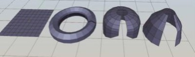
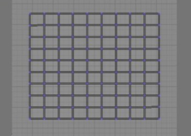
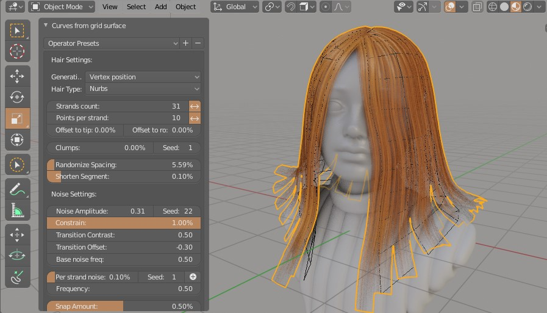

Curve from grid surface¶
You can use grid type of mesh (made all of quads), for guiding hair strands. Demo:
Creating proper grid mesh¶
First step is to generate base shape of hair. For that use grid mesh, created only of quads. Mark one border of this mesh with sharp edges - this area will become roots of hair strands.

Example of proper grid meshes:

If you add UV to them, they all would basically turn into flat 2D grid like this:

Generating curves¶

Press 'Curves from surface' button located in right UI Sidebar: "Hair Tool" tab -> Hair operators panel (or use ctrl+shif+h popup menu 'Curves from grid surface'), to generate curves from selected object. Generated curve settings can be modified using 'F9' hotkey. You can adjust parameters like hair amount, length, add some noise etc. Or you can manually tweak hair going into curve 'Edit mode'.
Generated hair will have material applied automatically, if you choose to 'generate ribbons' option ('generate ribbons' adds profile to hair curves)